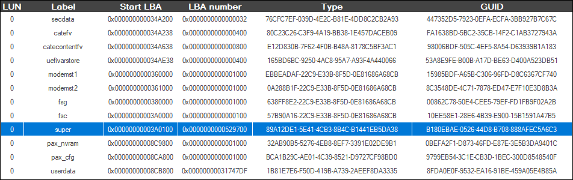
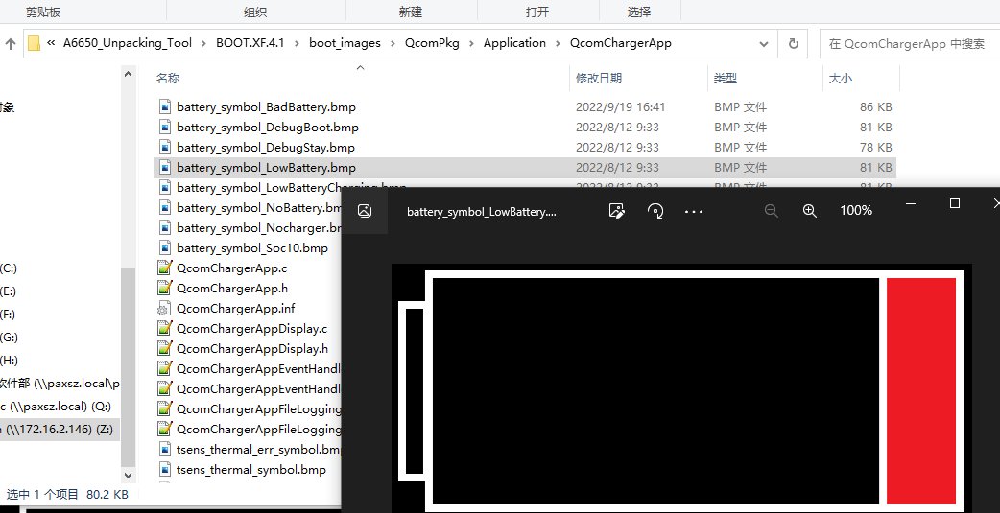

刷入VTS失败问题分析
分析一下system镜像变大导致fastboot烧录失败问题
参考
现象描述
fastboot烧录system时提示空间不够：
正常烧录：
C:\Users\xxx>adb reboot fastboot
C:\Users\xxx>fastboot delete-logical-partition product_a
< waiting for any device >
Deleting 'product_a' OKAY [ 0.008s]
Finished. Total time: 0.013s
C:\Users\xxx>fastboot delete-logical-partition product
Deleting 'product' OKAY [ 0.045s]
Finished. Total time: 0.046s
C:\Users\xxx>fastboot create-logical-partition product 0
Creating 'product' OKAY [ 0.045s]
Finished. Total time: 0.047s
C:\Users\xxx>fastboot flash boot Z:\gms_branch_m92xx\A665x-project\UM.9.15\out\target\product\bengal_32go\boot-debug.img
Sending 'boot' (15768 KB) OKAY [ 0.369s]
Writing 'boot' OKAY [ 1.220s]
Finished. Total time: 1.816s
C:\Users\xxx>fastboot flash system \\FUBOCHEN-PC\12-12gsi\system.img
Invalid sparse file format at header magic
Resizing 'system' OKAY [ 0.006s]
Sending sparse 'system' 1/5 (262104 KB) OKAY [ 6.074s]
Writing 'system' OKAY [ 3.173s]
Sending sparse 'system' 2/5 (262100 KB) OKAY [ 6.121s]
Writing 'system' OKAY [ 2.106s]
Sending sparse 'system' 3/5 (262120 KB) OKAY [ 6.071s]
Writing 'system' OKAY [ 2.091s]
Sending sparse 'system' 4/5 (262140 KB) OKAY [ 6.087s]
Writing 'system' OKAY [ 2.109s]
Sending sparse 'system' 5/5 (48696 KB) OKAY [ 1.138s]
Writing 'system' OKAY [ 0.975s]
Finished. Total time: 178.025s
空间不足：
C:\Users\xxx>fastboot flash system \\FUBOCHEN-PC\gms_package\system.img
Invalid sparse file format at header magic
Resizing 'system' FAILED (remote: 'Not enough space to resize partition')
fastboot: error: Command failed
问题原因
以下这次提交导致super分区变大。
commit 79db4c8db8b9e808bb0e9685750ebeb3d1c07f06
Author: fubochen <fubochen@xxxxx.com>
Date: Wed Feb 8 20:21:52 2023 +0800
[Title]:解决gts GtsPlacementTestCases问题
[Summary]:2g go预置得GMS应用和go 预置得不一样导致报如下error:
Full packages are required on the system partition for 2GB Android Go
devices
[Test Plan]: run gts -m GtsPlacementTestCases -t
com.google.android.placement.gts.InstalledAppsTest#testAppsInstalled
[Module]: gms
[Model]: M92xx
[author]: fubochen@xxxxx.com
[date]: 2023-02-08
diff --git a/QSSI.12/device/qcom/qssi_32go/qssi_32go.mk b/QSSI.12/device/qcom/qssi_32go/qssi_32go.mk
index 437de589527..06c65e0ae63 100755
--- a/QSSI.12/device/qcom/qssi_32go/qssi_32go.mk
+++ b/QSSI.12/device/qcom/qssi_32go/qssi_32go.mk
@@ -308,7 +308,7 @@ BUILD_GMS := true
BUILD_AGO_GMS := true
ifeq ($(strip $(BUILD_GMS)), true)
ifeq ($(strip $(BUILD_AGO_GMS)), true)
- $(call inherit-product-if-exists, vendor/partner_gms/products/gms_go.mk)
+ $(call inherit-product-if-exists, vendor/partner_gms/products/gms_go_2gb.mk)
else
$(call inherit-product-if-exists, vendor/partner_gms/products/gms.mk)
endif
增加预置应用大小大概在300M左右，分区大小前后对比如下：
NO. |
old |
new |
|---|---|---|
system |
647 MB |
643 MB |
product |
889 MB |
1.15 GB |
super |
2.04 GB |
2.32 GB |
实验结果
物理分区和实际分区大小
物理分区大小存在于rawprogram0_update_unsparse_m92xx.xml文件中，改文件用于制作Qfil软件的解包原料，里面包含了分区表信息，其中size_in_KB表示物理分区大小4706304kb
<program SECTOR_SIZE_IN_BYTES="512" file_sector_offset="0" filename="super.img" label="super" num_partition_sectors="9412608" partofsingleimage="false" physical_partition_number="0" readbackverify="false" size_in_KB="4706304.0"
Partition Manager查看实际super分区大小：
请注意看你手机的最后一个分区的 Start LBA 和 LBA number，分别是起始扇区和扇区长度。 以super分区为例，它的 Start LBA 和 LBA number 分别是 0x3A0100 和 0x529700。将扇区数乘以512可以得到super存储的实际容量，本例super的实际容量为 5412608× 512 = 2,771,255,296字节，约为2.58G。

板级配置大小修改
板级设置super分区大小主要是BOARD_SUPER_PARTITION_SIZE和BOARD_QTI_DYNAMIC_PARTITIONS_SIZE两个大小配置，并且有固定的计算公式：
BOARD_SUPER_PARTITION_SIZE = 物理分区
BOARD_QTI_DYNAMIC_PARTITIONS_SIZE分两种：
AB分区：BOARD_QTI_DYNAMIC_PARTITIONS_SIZE = (BOARD_SUPER_PARTITION_SIZE/2) - 4MB
非AB分区：BOARD_QTI_DYNAMIC_PARTITIONS_SIZE = BOARD_SUPER_PARTITION_SIZE - 4MB
之前固定成了2,771,255,296字节，现在改成和物理分区大小匹配：
--- a/UM.9.15/device/qcom/bengal_32go/BoardConfig.mk
+++ b/UM.9.15/device/qcom/bengal_32go/BoardConfig.mk
@@ -67,7 +67,7 @@ ifeq ($(ENABLE_AB), true)
BOARD_SUPER_PARTITION_SIZE := 12884901888
TARGET_RECOVERY_FSTAB := device/qcom/bengal_32go/recovery_AB_dynamic_partition.fstab
else
- BOARD_SUPER_PARTITION_SIZE := 2771255296 #1946157056 #4294967296
+ BOARD_SUPER_PARTITION_SIZE := 4819255296
TARGET_RECOVERY_FSTAB := device/qcom/bengal_32go/recovery_non-AB_dynamic_partition.fstab
endif
ifeq ($(BOARD_KERNEL_SEPARATED_DTBO),true)
@@ -76,7 +76,7 @@ ifeq ($(BOARD_KERNEL_SEPARATED_DTBO),true)
endif
BOARD_SUPER_PARTITION_GROUPS := qti_dynamic_partitions
# BOARD_QTI_DYNAMIC_PARTITIONS_SIZE = (BOARD_SUPER_PARTITION_SIZE/2) - 4MB
-BOARD_QTI_DYNAMIC_PARTITIONS_SIZE := 2771255296 #4290772992 modify by tian from 1941962752 +250m
+BOARD_QTI_DYNAMIC_PARTITIONS_SIZE := 4815060992 #modify by tian from 1941962752 +250m
修改后还是不行，提示
Failed to write partition table：
C:\Users\xxx>fastboot flash system \\FUBOCHEN-PC\gms_package\system.img
< waiting for any device >
Invalid sparse file format at header magic
Resizing 'system' FAILED (remote: 'Failed to write partition table')
fastboot: error: Command failed
串口打印如下：
[ 199.736693] fastbootd: Fastboot command: getvar:has-slot:system
[ 199.817462] fastbootd: Fastboot command: getvar:max-download-size
[ 210.968506] fastbootd: Fastboot command: getvar:is-logical:system
[ 211.017713] fastbootd: Fastboot command: resize-logical-partition:system:1191292928
[ 211.026909] fastbootd: [liblp]Device size does not match (got 2771255296, expected 4819255296)
[ 211.035660] fastbootd: [liblp]Partition system will resize from 677744640 bytes to 1191292928 bytes
[ 211.045101] fastbootd: [liblp]Block device super size mismatch (expected 4819255296, got 2771255296)
从上面的log看，应该是配置的super image大小与下载xml配置的不同。
突然想起之前修改cached分区大小问题，分区大小我们这边修改无效，只有广和通修改并更新底包才有效。
修改方案
super分区的扇区大小改为
num_partition_sectors="9412608"，并且需要更新gpt_backup0.bin和gpt_main0.bin文件，不然无法生效。
--- a/QSSI.12/vendor/xxxxx/PayDroid/M92xx/rawprogram0_update_unsparse_m92xx.xml
+++ b/QSSI.12/vendor/xxxxx/PayDroid/M92xx/rawprogram0_update_unsparse_m92xx.xml
@@ -47,10 +47,10 @@
<program SECTOR_SIZE_IN_BYTES="512" file_sector_offset="0" filename="" label="catecontentfv" num_partition_sectors="2048" partofsingleimage="false" physical_partition_number="0" readbackverify="false" size_in_KB="1024.0" sparse="false" start_byte_hex="0x694c7000" start_sector="3450424"/>
<program SECTOR_SIZE_IN_BYTES="512" file_sector_offset="0" filename="" label="uefivarstore" num_partition_sectors="1024" partofsingleimage="false" physical_partition_number="0" readbackverify="false" size_in_KB="512.0" sparse="false" start_byte_hex="0x695c7000" start_sector="3452472"/>
<program SECTOR_SIZE_IN_BYTES="512" file_sector_offset="0" filename="" label="fsc" num_partition_sectors="256" partofsingleimage="false" physical_partition_number="0" readbackverify="false" size_in_KB="128.0" sparse="false" start_byte_hex="0x74000000" start_sector="3801088"/>
- <program SECTOR_SIZE_IN_BYTES="512" file_sector_offset="0" filename="super.img" label="super" num_partition_sectors="5412608" partofsingleimage="false" physical_partition_number="0" readbackverify="false" size_in_KB="2706304.0" sparse="true" start_byte_hex="0x74020000" start_sector="3801344"/>
- <program SECTOR_SIZE_IN_BYTES="512" file_sector_offset="0" filename="" label="xxxxx_nvram" num_partition_sectors="4096" partofsingleimage="false" physical_partition_number="0" readbackverify="false" size_in_KB="2048.0" sparse="true" start_byte_hex="0x119300000" start_sector="9213952"/>
- <program SECTOR_SIZE_IN_BYTES="512" file_sector_offset="0" filename="" label="xxxxx_cfg" num_partition_sectors="4096" partofsingleimage="false" physical_partition_number="0" readbackverify="false" size_in_KB="2048.0" sparse="true" start_byte_hex="0x119500000" start_sector="9218048"/>
- <program SECTOR_SIZE_IN_BYTES="512" file_sector_offset="0" filename="userdata.img" label="userdata" num_partition_sectors="0" partofsingleimage="false" physical_partition_number="0" readbackverify="false" size_in_KB="0" sparse="true" start_byte_hex="0x119700000" start_sector="9222144"/>
+ <program SECTOR_SIZE_IN_BYTES="512" file_sector_offset="0" filename="super.img" label="super" num_partition_sectors="9412608" partofsingleimage="false" physical_partition_number="0" readbackverify="false" size_in_KB="4706304.0" sparse="true" start_byte_hex="0x74020000" start_sector="3801344"/>
+ <program SECTOR_SIZE_IN_BYTES="512" file_sector_offset="0" filename="" label="xxxxx_nvram" num_partition_sectors="4096" partofsingleimage="false" physical_partition_number="0" readbackverify="false" size_in_KB="2048.0" sparse="true" start_byte_hex="0x193420000" start_sector="13213952"/>
+ <program SECTOR_SIZE_IN_BYTES="512" file_sector_offset="0" filename="" label="xxxxx_cfg" num_partition_sectors="4096" partofsingleimage="false" physical_partition_number="0" readbackverify="false" size_in_KB="2048.0" sparse="true" start_byte_hex="0x193620000" start_sector="13218048"/>
+ <program SECTOR_SIZE_IN_BYTES="512" file_sector_offset="0" filename="userdata.img" label="userdata" num_partition_sectors="0" partofsingleimage="false" physical_partition_number="0" readbackverify="false" size_in_KB="0" sparse="true" start_byte_hex="0x193820000" start_sector="13222144"/>

计算公式：9412608 x 512 = 4819255296字节，刚好是和物理分区大小4706304kb相等。